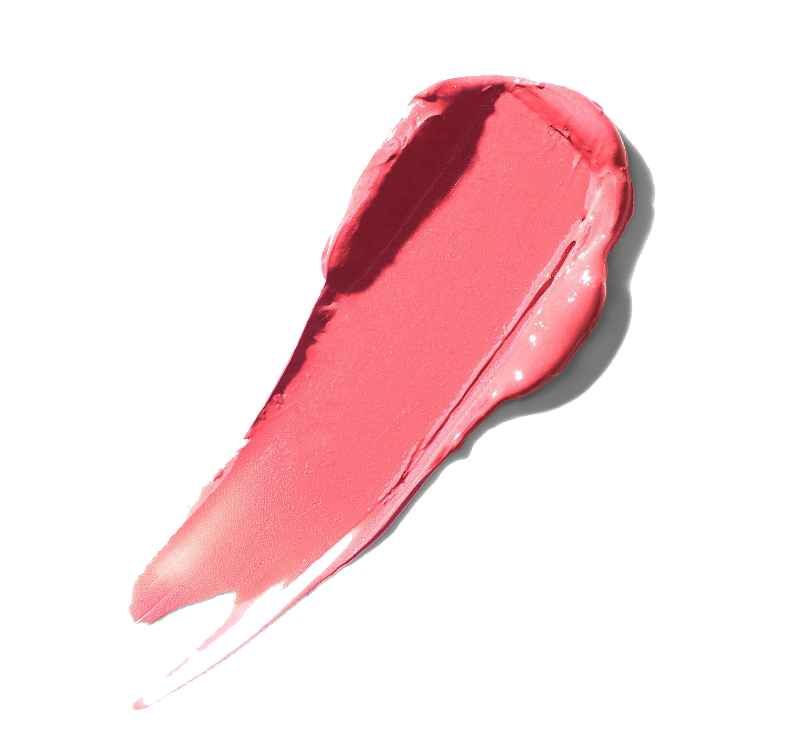
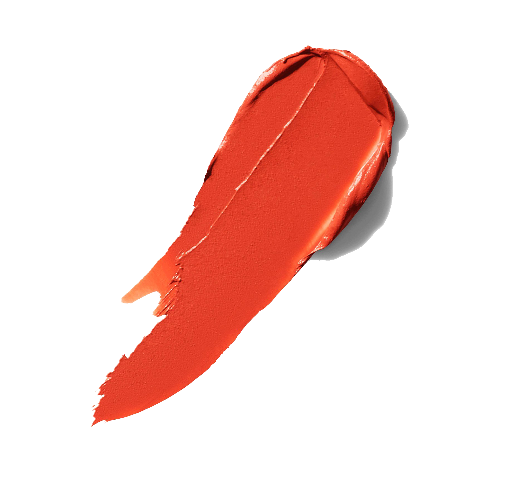
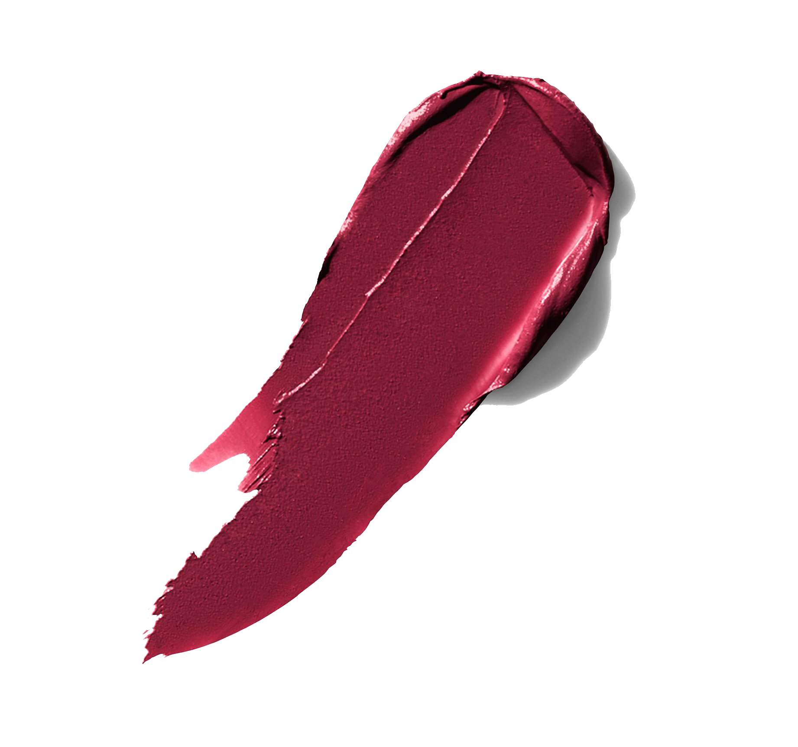

A good starting point for determining “your” nude lip shade is to find one that matches or is one shade darker than your inner lip.
Tinted balms and glosses add a bit of color to your lips, working with the lips’ natural shade to enhance them.

PINKS
Lighter pink lipstick shades make the lips appear fuller, while darker shades will thin them out. Choose what you will wear according to how you wish that pout to look.

REDS
For a subtler look, you’ll want to find lipstick shades that have the same undertones as you do. If you’re new to red lipstick, we definitely recommend starting with these, because they’re most likely to suit you. However, for a look that seriously pops, you’ll want ones with the opposite tones to your skin for that added contrast.

BERRIES
For a berry everyday lipstick, go for a shade in the range for your tones, that is more neutral. So if you do want to wear a plum or a purple, look for a shade that has sheen in it, is a little less dramatic, or simply find a gloss you can wear instead!